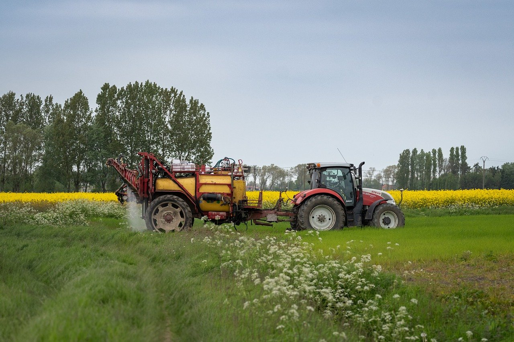

-
.avif)
Pradhan Mantri Kisan Samman Nidhi Scheme (PM-KISAN)
Under the PM-KISAN Scheme, farmers receive an annual financial assistance of Rs 6,000. This amount is sent to farmers' accounts in three installments of Rs 2,000 each at intervals of four months.
How to Apply?- Step 1: Check Eligibility Before beginning, a farmer must meet the eligibility criteria of owning a cultivable land holding of up to 2 hectares.
- Step 2: Gather Essential Documents Collect the necessary documents for the application, which include the Aadhaar card, land ownership documents, and bank account details.
- Step 3: Visit the Official PM-KISAN Portal Access the official PM-KISAN portal and click on "New Farmer Registration" on the homepage to begin the registration process.
- 4: Enter Aadhaar Details in the designated field Ensure the Aadhaar card is linked to your mobile number to receive the OTP for verification.
- 5: Fill in the Required Information Fill in all the required information accurately, which includes personal details, bank account details, and land ownership details.
- 6: Submit the Form Double-check all the entered information and click on the "Submit" button.
- 7: Submit the OTP You'll receive an OTP (One-Time Password) on the mobile number linked to your Aadhaar. Enter this OTP in the designated field for verification.
-

Ultimate Reuben
All great meals take time, but this one takes it to the next level! More than 650 hours of fermenting, brining, aging, and curing goes into each and every one of our legendary Reuben sandwiches.
Every element of this extraordinary sandwich is handcrafted in our kitchens, from the rye bread baked from our secret recipe to the cave-aged Swiss cheese, right down to the pickle. The only thing we didn't make on the premises is the toothpick ( but we're looking into how to do that).
This unforgettable sandwich has all of the classic Reuben elements: corned beef, rye bread, creamy Russian dressing, sauerkraut, plus a sweet gherkin pickle. No substitions please!
Add a side of french fries or sweet potato fries for $2 more, or our housemade pub chips for $1.
-
Fig & Berry Plate
A succulent sextet of fresh figs join with a selection of bodacious seasonal berries in this refreshing, shareable dessert.
Choose your drizzle: cherry-balsamic vinegar, local honey, or housemade chocolate sauce.